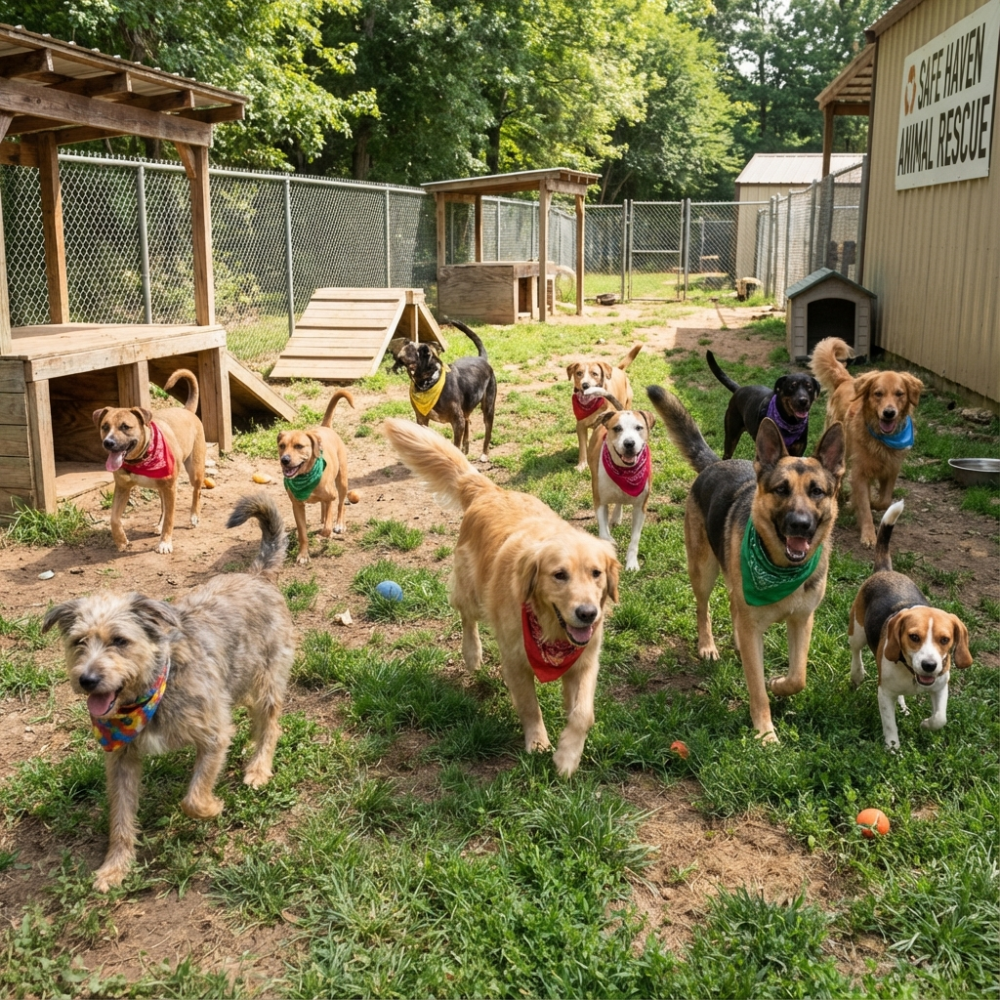

In modern urban India, commercial pet breeding has fueled a massive, tragic paradox. Prospective pet owners spend tens of thousands of rupees purchasing imported pedigree breeds like Siberian Huskies, Saint Bernards, Pugs, and French Bulldogs—animals biologically engineered for Arctic tundra or flat-faced aesthetics that suffer terribly in tropical heat from heatstroke, chronic hip dysplasia, and breathing disorders (brachycephalic obstructive airway syndrome). Meanwhile, right outside our doorsteps roam Indian Native (Indie / Desi / Pariah) dogs—one of the oldest, naturally evolved, and robust canine landraces on planet Earth.
At Dogs Protection Trust (DPT), our adoption counselling team has matched hundreds of rescued Indies with loving families across Karnataka. In this comprehensive masterclass guide, we explore the evolutionary genetics of the Indian Pariah dog, compare their health against pedigree breeds, and walk you through the essential 3-3-3 transition framework for bringing your adopted companion home.
1. Evolutionary Brilliance: Why Indies are Nature's Masterpiece
Unlike artificially selectively bred dogs whose gene pools have been narrowed over the past 200 years for superficial physical traits, the Indian Pariah dog has evolved naturally over 4,500+ years through natural selection. Only the most genetically fit, intelligent, and disease-resistant animals survived the challenging subcontinent climate.
The Top 5 Advantages of Adopting an Indie Dog
- Natural Climate Immunity: Short, single-layered coats with minimal underfur prevent overheating during hot Mysore summers and dry rapidly during monsoon rains.
- Virtually Zero Genetic Disorders: Indies have an extraordinarily diverse gene pool, making them practically immune to congenital hip dysplasia, progressive retinal atrophy, heart murmurs, and flat-faced respiratory distress.
- Low-Maintenance Grooming: Indies possess self-cleaning coats with minimal natural dog odor. A simple monthly bath and weekly brushing is all that is required.
- High Emotional Intelligence & Problem Solving: Having navigated complex street environments, Indies are observant, fast learners who excel at positive-reinforcement agility, leash training, and household routines.
- Fierce Loyalty & Instinctive Guarding: An Indie dog develops an unbreakable emotional bond with its family, serving as a vigilant, affectionate protector without unprovoked aggression.
2. Pedigree Breeds vs. Indian Native Dogs: A Veterinary Comparison
| Health & Care Metric | Pedigree Breeds (Huskies/Pugs/Labs) | Indian Native (Indie) Dog |
|---|---|---|
| Climate Adaptability | Poor (Prone to heat exhaustion & skin allergies) | Exceptional (Native tropical evolution) |
| Average Lifespan | 8 to 11 Years | 14 to 17+ Years |
| Lifetime Veterinary Expenses | Extremely High (Genetic hip/eye/skin ailments) | Minimal (Routine annual vaccinations & deworming) |
| Grooming Requirement | Daily detangling & professional haircuts | Zero professional grooming required |
| Digestive Sensitivity | High (Requires expensive specialized commercial kibble) | Extremely Resilient (Thrives on fresh home-cooked food) |
3. The 3-3-3 Adoption Transition Rule
Adopting a rescue dog into a new home is a major life transition. Understanding the 3-3-3 Rule prevents unrealistic expectations and helps adopters guide their new dog smoothly:
First 3 Days: Decompression & Overwhelm
Your new dog may feel overwhelmed, frightened, or withdrawn. They might refuse food, sleep excessively, or hide under furniture. Guideline: Keep the home quiet, avoid inviting guests over, maintain a predictable feeding schedule, and let the dog approach you at their own pace.
First 3 Weeks: Settling In & Learning Routines
The dog begins to realize they are in a safe environment. Their true personality starts emerging. They learn household rules, potty routines, and feeding times. Guideline: Establish consistent leash walking times and use positive reinforcement (small treats) for good behavior.
First 3 Months: Complete Trust & Lifelong Bond
The dog feels completely at home, understands that you are their permanent family, and develops deep unconditional trust and affection.
🐾 Adoption Story: Maya's New Life in Mysore
The Rescue: Maya was found abandoned in a cardboard box near Chamundi Hills during a cold December night with severe tick fever and hypothermia.
The Adoption: After receiving full medical treatment and vaccinations at DPT, software engineer Rahul visited our shelter looking to adopt. Maya trotted up and rested her head on his knee.
The Feedback: "Adopting Maya was the single best decision my family ever made," says Rahul. "She learned potty training in four days, is brilliant with my 6-year-old daughter, and greets me with pure joy every evening!"
4. Indie Dogs in Apartments: Busting the Space Myth
A common misconception among urban adopters in Mysore and Bangalore is that native Indie dogs require massive agricultural farmhouses or huge independent villas to be happy. In reality, Indies thrive exceptionally well in compact 2BHK and 3BHK apartments, provided their basic daily physical and mental exercise needs are fulfilled.
Apartment Care Guidelines
- Two 30-Minute Structured Leash Walks: Morning and evening brisk walks fulfill 100% of an adult Indie's physical exercise requirements and provide essential olfactory mental stimulation.
- Quiet Indoor Demeanor: Unlike high-strung working breeds (Border Collies, Belgian Malinois) that pace restlessly indoors, native Indies have a natural "off-switch" and spend most of their indoor hours calmly napping near their human family.
- Balcony Safety Netting: High-rise apartment balconies and open stairwells must be secured with durable nylon bird-netting or metal grilles to prevent accidental falls during bird-chasing moments.
5. Puppy-Proofing Your Home & The First 14 Days Setup
Preparing your physical household before your adopted puppy arrives eliminates accidents and ensures a seamless transition:
- Secure Electrical Cables: Conceal power strips, phone charging cords, and television cables inside plastic cord organizers or run them behind heavy furniture.
- Designate a Quiet "Safe Haven" Corner: Set up a comfortable, padded dog bed in a low-traffic corner of the living room with a chew toy and a clean water bowl. When the puppy retreats to this space, family members must respect their boundary and never disturb them.
- Remove Toxic Household Plants: Ensure plants like Dieffenbachia, Aloe Vera, and Lilies are placed out of reach.
- Positive Crate & Pen Conditioning: Use open exercise playpens with comfortable bedding for short rest periods, creating a cozy den rather than a punishment enclosure.
6. Introducing Your Adopted Indie to Existing Pets (Cats & Dogs)
If you already have resident dogs or cats, introducing a newly adopted rescue requires a structured, multi-stage protocol to prevent territorial defensiveness:
- Neutral Ground First Meeting: Introduce dogs on loose leashes in a quiet, neutral outdoor park (not inside your home territory). Walk both dogs parallel to each other at a 15-foot distance before allowing brief, 3-second reciprocal sniffing.
- Scent Swapping: Exchange sleeping towels and bedding between pets for 48 hours prior to direct physical contact, familiarizing each animal with the other's scent profile.
- Controlled Cat Introductions: Keep your new dog on a short leash during initial indoor cat meetings. Reward the dog with high-value treats for looking at the cat and then immediately turning attention back to you (look-at-that game).
7. Why Senior Indie Adoptions are Pure Magic
While puppies are undeniably adorable, adopting a senior (5+ years old) Indie is one of the most rewarding decisions an animal lover can make. Senior Indies are already fully house-trained, have outgrown destructive teething phases, require moderate walking, and show profound, calm gratitude for a soft bed and loving home.
8. The DPT 4-Step Adoption Process
- Shelter Visit & Meet-and-Greet: Spend unhurried time interacting with our vaccinated, sterilized dogs in our play yards.
- Lifestyle Matchmaking Counselling: Our team helps you select an animal whose energy level matches your family (e.g. calm seniors for apartments, energetic pups for active families).
- Pre-Adoption Home Check & Advice: Quick guidance on balcony netting, secure gates, and quality nutrition.
- Lifelong Support: DPT provides ongoing veterinary advice, vaccination reminders, and training tips for life!
Written by DPT Adoption Counselling Desk
Championing native Desi dog adoptions, responsible pet parenting, and lifelong family support at Dogs Protection Trust Mysore.
6. Dispelling Common Myths About Indian Native (Desi) Dogs in Urban Homes
Despite centuries of living alongside human civilization, native Indian Indie dogs are frequently subjected to unfair stereotypes from pet seekers biased towards foreign imported breeds. One common myth is that Indie dogs are 'too aggressive' or 'untrainable' for modern apartment living. In reality, veterinary behaviorists globally recognize Indian Native canines as among the most intelligent, empathetic, and adaptable dog breeds on earth. Having evolved through natural selection across thousands of years in India's tropical climate, Indies possess robust natural immune systems that make them remarkably resistant to genetic dysplasia, skin allergies, and digestive sensitivities that plague pedigrees.
Indies also exhibit low body odor, short self-cleaning coats that require minimal grooming, and an innate emotional sensitivity to family household routines. Whether living in a compact city apartment or a spacious suburban bungalow, a rescued Indie dog quickly bonds with all family members, children, and other pets, serving as an intensely loyal companion and natural guardian.
7. The Step-by-Step DPT Mysore Adoption Handover & Support Protocol
Our Ethical, Transparent Adoption Procedure
We make adopting a rescued dog a joyful, fully supported experience for every family in Mysore and Karnataka:
- Shelter Meet & Greet: Families visit our sanctuary to interact with puppies and adult dogs in our open play yard, finding the companion whose energy naturally matches their home.
- Complete Health Handover: Every adopted dog receives a signed Veterinary Health Passport documenting up-to-date Anti-Rabies, 7-in-1 multi-vaccinations, broad-spectrum deworming, and sterilization certificate.
- Free 1-Year Advisory & Medical Support: DPT provides direct WhatsApp behavioral guidance, complimentary vaccination boosters for 12 months, and lifelong support so your adoption journey is completely seamless and joyful.
9. Lifelong Bonding: Transforming Lives Through Compassionate Rescue Adoption
When you welcome a rescued Indie dog into your home, you gain more than a faithful pet—you welcome a resilient, deeply empathetic soul whose loyalty knows no bounds. Indie dogs seamlessly adapt to your family's rhythm, offering joyous greetings at the doorway, intuitive emotional comfort during difficult days, and vigilant protection of your home. By adopting from Dogs Protection Trust, you directly save a life, create open space for our ambulance to rescue another distressed canine, and become an integral partner in Mysore's animal welfare movement.